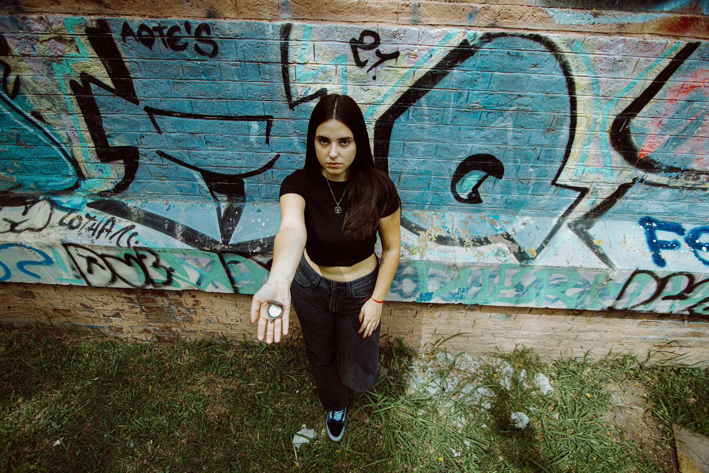
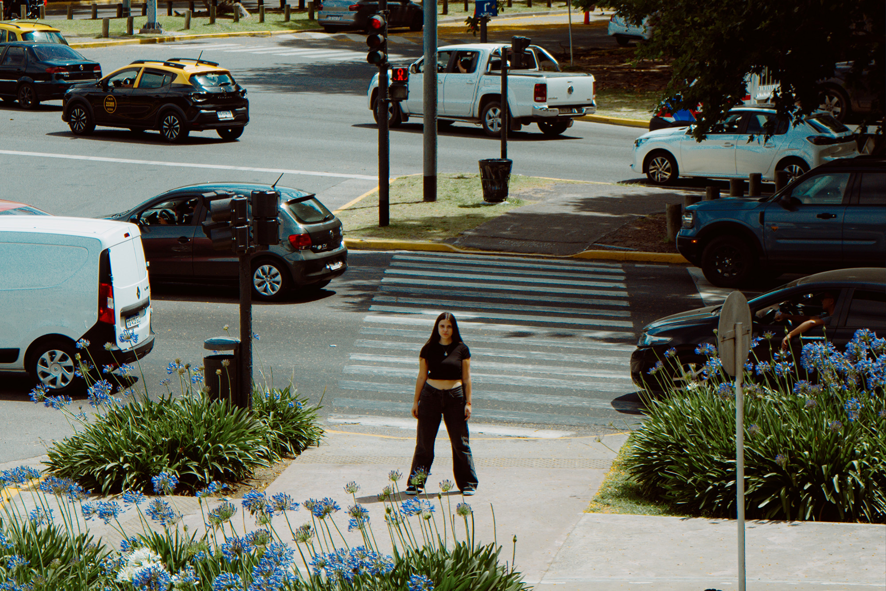

Videoclip oficial
El mundo sigue. Ella no puede. La pieza trabaja esa distancia, entre la protagonista y todo lo que la rodea, para mostrar cómo se siente estar adentro de un pozo con la vida pasando afuera.

Un videoclip sobre la parálisis y el peso invisible de seguir. Una pieza íntima y cinematográfica donde cada plano cuenta algo que las palabras no alcanzan a decir.
Un Día Más habla de algo que cuesta mucho nombrar: el pozo. Ese momento en que levantarse duele, en que el mundo sigue a toda velocidad y vos no podés arrancar. La canción lo dice sin rodeos, y el videoclip tenía que estar a la altura de eso.
Desde Andina trabajamos el concepto desde adentro: entender qué quería contar Alaska, qué se siente cuando pedís ayuda sin que nadie te escuche. La idea nunca fue ilustrar la canción. Fue construir algo que se sintiera tan honesto como la letra.
El mundo sigue. Ella no puede. La pieza trabaja esa distancia, entre la protagonista y todo lo que la rodea, para mostrar cómo se siente estar adentro de un pozo con la vida pasando afuera.
Todo lo que pasó antes de que existiera el videoclip: cómo llegamos al concepto, qué buscábamos en cada locación y los momentos del proceso que no entran en la pantalla pero forman parte de todo.
Imágenes del videoclip y del rodaje. La habitación, el encierro, los espacios públicos donde nadie mira y los momentos que quedaron detrás de cámara.
La canción habla de algo muy específico: ese estado en que no podés moverte mientras el mundo no para. Desde ahí construimos la lógica visual del videoclip: la habitación como el lugar donde todo se detiene, el exterior como el mundo que sigue sin esperarte.
Buscamos un look neo-noir urbano, cinematográfico y nocturno. El interior: frío, íntimo, detenido. Colores azules, luz de reloj, polvo. El exterior: velocidad, neones, túneles, la ciudad que no te espera.
El grito silencioso que describe la canción tenía que encontrar su forma en la edición. Trabajamos el ritmo para que la tensión no se resolviera fácil, para que ese paso final, uno solo, pequeño, se sintiera como lo que es: lo más difícil de todo.

La habitación carga con el encierro, el desgaste, el tiempo que no pasa. El exterior carga con todo lo que empuja desde afuera: la ciudad, el movimiento, la gente que ni te ve. La identidad quedó clara sola.
Lo que más nos importaba era que quien lo vea lo reconozca. No hace falta haber vivido exactamente eso para entender lo que siente ese personaje parado en el medio de la multitud, gritando sin que nadie escuche.
Un día más, pero sigo aunque no se ve. A veces el paso más pequeño es el que más cuesta, y este videoclip —creado con mucho amor— existe para que eso se pueda ver.
Contanos tu idea y arrancamos a construirla juntos.
Escribinos por WhatsApp{kind=link}
{kind=link}
{kind=link}
{kind=link}
{kind=link}
{kind=link}
{kind=link}
{kind=link}